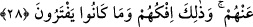
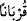

dönüşmesi mümkün olan etrafı ve civarıdır. Zâhir olup akla gelen, bu kentlerden kent
halkının murad edilmesidir. Buna göre bu hükme Ad kavmi de dâhildir. Çünkü daha
önce geçtiği gibi onlar da helâk edilmiş, geride sadece meskenleri kalmıştır.
Keşfü’l-esrâr’da âyetlerin tekrar tekrar açıklanması, âyetleri yalanlayarak Allah’a
ortak koşan geçmiş ümmetlerin kıssalarının tekrar tekrar anlatılması şeklinde
yorumlanmıştır. Âlimler şöyle demişlerdir: Burada “belki dönerler” ifâdesi, kâfirlerin
arzu ve isteklerini artırmak, müminlere de bir ümid vermektir.
Yoksa Allah Teâlâ (her şeye rağmen) bu kâfirlerin küfür ve isyanlarından
dönmeyeceklerini bilmektedir.
Fakîr (Bursevî) der ki: Bu durum, kaderin sırlarındandır. Bu konu çokça araştırılıp
irdelenemez. Zira bu sır perdesi aralanamaz. Çünkü Allah Teâlâ cinleri ve insanları
kendisine ibâdet etmeleri için yaratmıştır. Cin ve insanlardan Allah’a ibâdet edenler ise
çok azdır. Âyetleri böyle tekrar tekrar açıklayıp insanları mûcizelerle dâvet etmek,
onların varlıklarının tabiî bir gereği olduğundan Allah Teâlâ ve peygamberler bu işi
yapmışlardır.
Teklîfî emir ile irâdî emir arasındaki fark şudur: Emr-i teklifî, emredilenin meydana
gelmesini gerektirmez. Emr-i iradî ise böyle değildir. Yâni emr-i iradî tecellî etti mi
artık emredilen şey meydana gelir. Değilse Allah’ın iradesiyle murad ettiği şey arasında
bir duraklama olur ki bu muhaldir.
28. Allah’tan başka kendilerine yakınlık sağlamak için tanrı edindikleri şeyler,
kendilerine yardım etselerdi ya! Hayır, onları bırakıp gittiler. Bu onların yalanı ve
uydurup durdukları şeydir.
“Allah’tan başka, kendilerine (Allah’a) yakınlık sağlamak için tanrı edindikleri
şeyler, kendilerine yardım etselerdi” ve onları azaptan kurtarsalardı “ya!.” Öyle ki
onlar o putları kendilerini Allah’a yaklaştırmak üzere ilâh edinmişlerdi. Zira müşrikler
“Biz bunlara sırf bizi Allah’a yaklaştırmaları için tapıyoruz.” (Zümer, 39/3).
“Bunlar Allah katında bizim şefaatçilerimizdir” diyorlardı.” (Yunus, 10/18).
“Hayır, (tanrıları), onlardan kaybolup gittiler.” Putlarının tamamen onlardan kaybolup
onlara yardım edememesi “işte onların yalanları ve” putları ilâh saymalarının, onları
Allah’a ortak koşmalarının, Allah’a iftira etmeleri ve “uydurmaları”nın sonucu
“budur.”
“Allah’tan başka, kendilerine (Allah yanında) yakınlık sağlamak için tanrı
edindikleri şeyler,” “kurban”, kendisiyle Allah’a yakınlık sağlanan şeydir. Burada “
” fiilinin iki mefûlünden biri hazfedilen mefûl zamiri olup ikincisi “
”dir. “
”